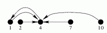

第一行有3个由空格隔开的整数n, k (n, k <= 1,000,000), m (m <= 10^18)。
第二行有n个正整数，第i个数表示第i块石头离左岸的距离，保证输入的n个正整数严格递增，并且不超过10^18。
一个条河无限宽，上面有n块石头，石头离左边的河岸（无限宽，右边河岸不晓得在哪）距离严格递增，现在Zxl想锻炼自己的跳跃能力（谁叫他在班里外号是鸟怪。。畸形），他在某一块石头上，想跳到离他这块石头第k远的石头上去，假如离他第k远的石头不是唯一的，他就选离岸最近的那一个（不然回不去了），他想你让他知道，从每块石头开始跳了m次后，自己在哪。
第一行有3个由空格隔开的整数n, k (n, k <= 1,000,000), m (m <= 10^18)。
第二行有n个正整数，第i个数表示第i块石头离左岸的距离，保证输入的n个正整数严格递增，并且不超过10^18。
一行n个由空格隔开的整数，第i个表示Zxl从第i块石头开始跳，跳m次后会在哪个石头上。
5 2 4
1 2 4 7 10
1 1 3 1 1
